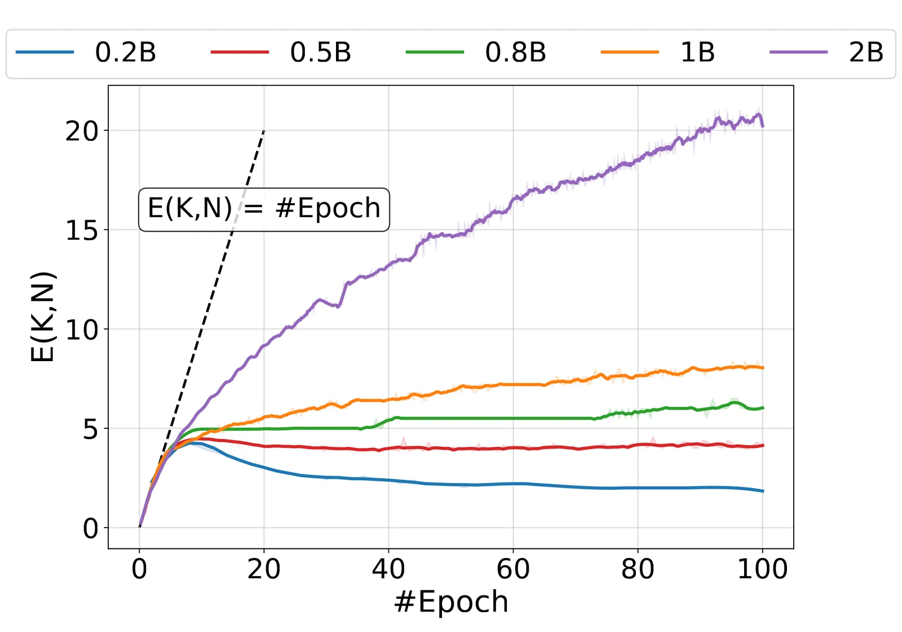
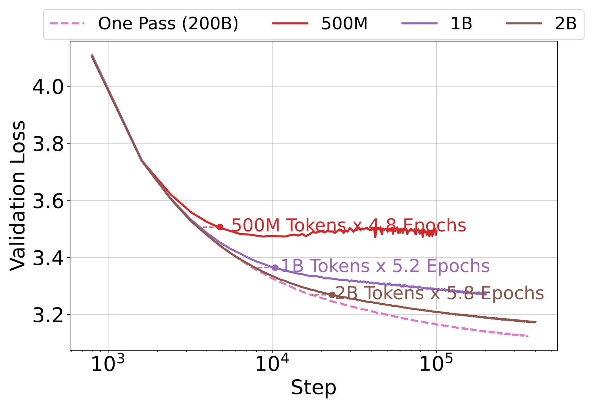
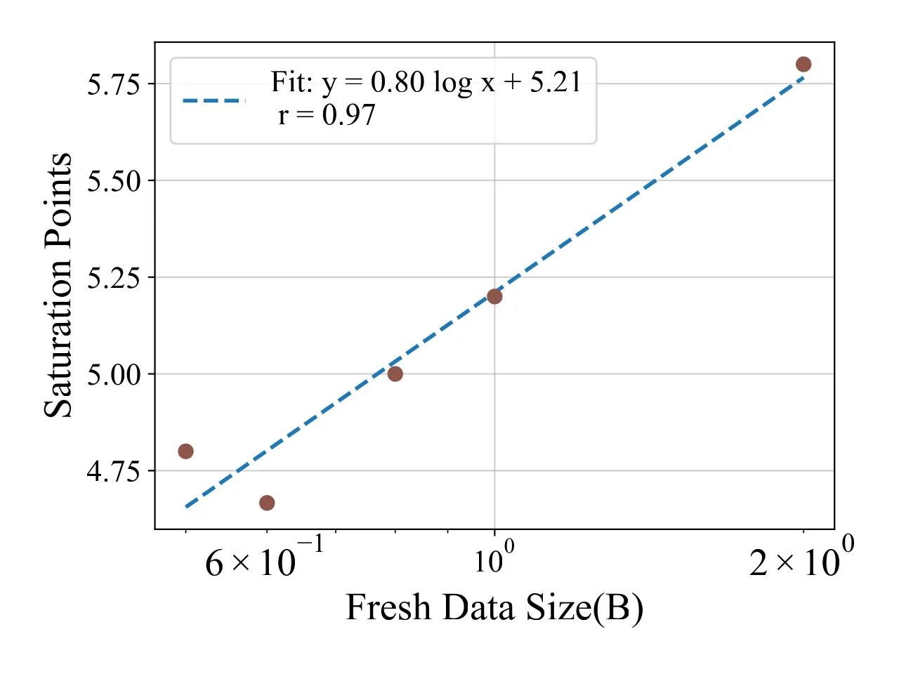
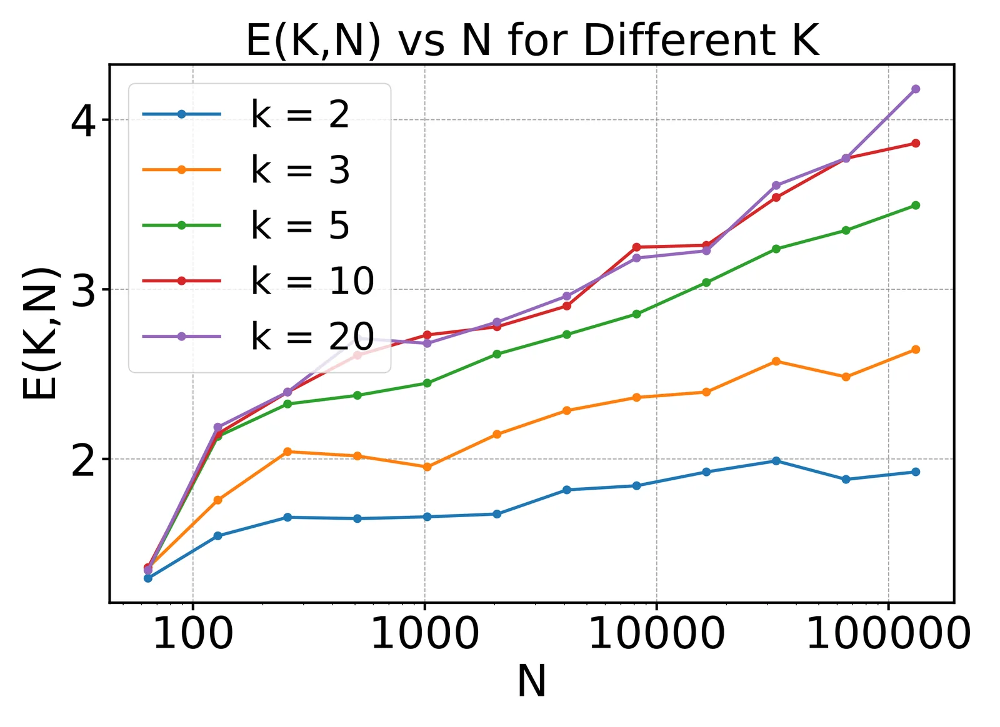
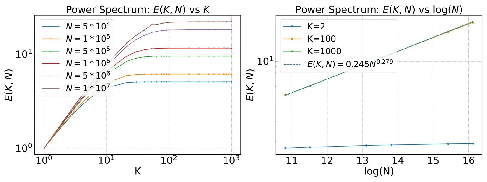

Larger Datasets Can Be Repeated More
会议：ICLR 2026
作者：Haodong Yan, Kaiyue Wen, Binghui Li, Zixuan Luo, Xingyu Chen, Kaifeng Lyu（清华 / 北大）
问题动机
Chinchilla 等 scaling law 默认 one-pass：每个 token 最多看一遍。公开文本却可能在 2028 年左右耗尽（Villalobos），实务已经在同一份数据上跑多 epoch。Muennighoff et al. 给出经验公式
它暗示有效复用率 E=N'/N 只依赖 K，与数据集大小 N 无关。拟合和真实曲线仍有缝，而且「4 epoch 几乎无损、16 epoch 递减」到底会不会随 N 移动，没有理论。
核心想法
把「K 轮、N 个样本」折算成 one-pass 要多少新样本 N'(K,N)，看比值
小 K 时 E\approx K（多训一轮 ≈ 多一份新数据）；大 K 后饱和。饱和点随 N 右移——更大的数据集可以重复更多遍。这直接否定「E 与 N 无关」。
方法细节
设定是带标签噪声的线性回归：y=\langle w^*,x\rangle+\xi，\mathbb{E}[\xi]=0，\mathbb{E}[\xi^2]=\sigma^2，\|x\|\le D，H=\mathbb{E}[xx^\top]=\mathrm{diag}(\lambda_1\ge\cdots\ge\lambda_d)。超额风险
算法是 K-epoch 随机洗牌 SGD，每轮独立置换 \pi_k，起点 w_0=0：
比较时两边都取最优常数学习率（并限制 \eta\le D^{-2}）：
分析还加了计算可行约束 K=O(N^{0.1})，避免误差项爆掉。
强凸（\lambda_d\ge\mu>0）
最优超额风险先出现相变：
再反解出复用率：
相变在 K\sim\log N。过了拐点，再重复只换来 \Theta(N\log N) 的等效新数据。最优常数学习率量级是 \eta'\propto\log(KN)/(KN)。
Zipf / 幂律谱（模拟长尾特征）
one-hot 特征 x=\mu_i e_i，采样 p_i\propto i^{-(a-b)}，谱 \Lambda_i=i^{-b}。则
饱和不再是 \log N，而是 N 的幂。对数幂律谱则饱和在 \Theta(\log^b N)。谱越长尾，同一份数据能重复的遍数越多。
证明骨架：偏差–方差分解 \to 随机矩阵连乘用 (I-\eta H)^n 集中 \to 最优 \eta 代入后反解 N'。
关键结果



- LLM：0.3B 模型（改自 Qwen2.5-0.5B），DCLM 子集，fresh token N\in\{0.2,0.5,0.8,1,2\}B 各训 100 epoch，另有 200B 对照。常数学习率。小 K（大约 \le 5）时 E\approx K，与 datablations「4 epoch 几乎无损」同方向；定义饱和点为 E=\lambda K（主文 \lambda=0.75），该点随 \log N 近似线性右移。
- 强凸仿真（d=100，\sigma=0.1，\eta\propto\log(KN)/KN）：固定 K 时，E 先随 \log N 涨，再压平到 K。

- Zipf 仿真（d=10^5，a=4.5，b=1）：大 K 饱和值拟合 c_1 N^{c_2}，指数 c_2=0.279\approx b/(a-b)=2/7。

局限与延伸阅读
局限（作者承认）：
- 最优常数学习率；decay 时 one-pass 已接近 minimax，\bar R^*(1,N)=O(\kappa_H\sigma^2 d/N)，于是 E 至多 O(\kappa_H)，有限 K 如何饱和未解决。
- 理论停在线性模型，没有 feature learning。
- 整集重复；选择性复用 / 改写高质量数据未做。
- 主定理靠强凸；非强凸只给了 Zipf 可解特例。
延伸阅读：
- Muennighoff et al.（
finetuning-efficiency/papers/2305.16264-data-constrained-lms）：被本文修正的 N 无关经验式。 - Hernandez et al. 2022（
2205.10487-repeated-data）：部分重复会破坏 induction heads，机制不同于整集复用。 - Hestness / Kaplan / Chinchilla：one-pass 数据缩放的背景。